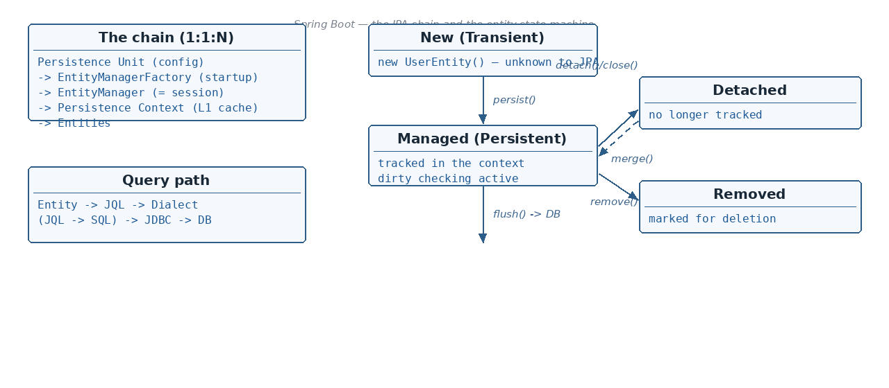

Custom Factory
☕ 9 min read · 🎬 Video walkthrough · 📊 UML diagram · 💻 Runnable code
⚡ In a nutshell — The full JPA architecture: Persistence Unit → EntityManagerFactory → EntityManager → Persistence Context → Entities · What a Persistence Unit is and how EntityManagerFactory is created from it at startup · Transaction manager types: RESOURCE_LOCAL (one DB) vs JTA (spans multiple DBs) · The EntityManager interface and its CRUD methods
This is the most important diagram of the topic. Everything in JPA hangs off this chain:

How the pieces nest into each other — an EntityManager contains a Persistence Context, which contains the entities it is working on:
Two side notes from the diagram page:
entityManager.getUser(1) → when it returns the object, it is stored in the Persistence Context.Added: an entity is a plain Java class marked with
@Entityand@Id— JPA maps it to a table and its fields to columns. This is what the "Entity" boxes in the diagram are:
@Entity
@Table(name = "user_details")
public class UserDetails {
@Id
@GeneratedValue(strategy = GenerationType.IDENTITY)
private Long id;
private String name;
private String email;
// getters and setters
}
# which packages hold the entities of this persistence unit
spring.jpa.packages-to-scan=com.x.entity
# typical connection + provider configuration that forms the persistence unit
spring.datasource.url=jdbc:mysql://localhost:3306/mydb
spring.datasource.username=root
spring.datasource.password=secret
spring.jpa.database-platform=org.hibernate.dialect.MySQLDialect
EntityManagerFactory object gets created during application startup.EntityManager.The notes list the 3 ingredients — datasource, JpaVendorAdapter, LocalContainerEntityManagerFactoryBean — and you can create many factories this way:
@Configuration
public class JpaConfig {
@Bean
public DataSource dataSource() {
HikariDataSource ds = new HikariDataSource();
ds.setDriverClassName("com.mysql.cj.jdbc.Driver");
ds.setJdbcUrl("jdbc:mysql://localhost:3306/mydb");
ds.setUsername("root");
ds.setPassword("secret");
return ds;
}
@Bean
public LocalContainerEntityManagerFactoryBean entityManagerFactory(
DataSource dataSource) {
LocalContainerEntityManagerFactoryBean emf =
new LocalContainerEntityManagerFactoryBean();
emf.setDataSource(dataSource); // 1) datasource
emf.setJpaVendorAdapter(new HibernateJpaVendorAdapter()); // 2) vendor adapter
emf.setPackagesToScan("com.x.entity"); // entities of this unit
return emf; // 3) the factory bean
}
}
Good to know: define two such factory beans (each with its own
DataSource) and you have two persistence units in one application — the standard way to talk to two databases.
During persistence unit setup, we specify the value for transaction-type — either:
RESOURCE_LOCAL (Default)JTA (Java Transaction API)The transaction manager could be of two types:
RESOURCE_LOCALDuring application startup, after the EntityManagerFactory object is created, a transaction manager object gets created based on RESOURCE_LOCAL or JTA.
spring.jpa.properties.javax.persistence.transactionType=RESOURCE_LOCAL
Spring uses JpaTransactionManager.class for this. You can also configure it manually:
@Bean
public JpaTransactionManager transactionManager(
EntityManagerFactory entityManagerFactory) {
return new JpaTransactionManager(entityManagerFactory);
}
Creating a transaction which can span across multiple DBs (JTA) — covered separately (the notes defer it to a dedicated video/topic on distributed transactions).
persist() — insert a new entitymerge() — update / re-attach an entityfind() — read by primary keyremove() — delete an entitycreateQuery() — run JQL/HQL queriesEntityManager interface methods are implemented by JPA vendors like Hibernate etc.EntityManagerFactory helps to create an object of EntityManager.Added:
JpaRepository(Spring Data JPA) sits on top ofEntityManager. Everysave(),findById(),delete()you call on a repository is translated into these sameEntityManagercalls internally. Understanding this layer explains most JPA "magic".
EntityManager, a PersistenceContext object is created, which holds the list of entities it's working on.EntityManager Insert/Update/Delete operations are transaction bounded. Meaning: it first checks if a transaction is open — if not, it will throw an exception.
But not all operations — READ operations are NOT transaction bounded.
Internally, all JpaRepository Insert/Update/Delete methods are annotated with @Transactional, so even if we do not write it, the Spring framework takes care of it.
@Service
public class UserService {
@PersistenceContext
EntityManager entityManager;
public void saveUser(UserDetails user) {
entityManager.persist(user); // no transaction open here!
}
}
Result → TransactionRequiredException
To fix it — open the transaction yourself with @Transactional:
@Transactional
public void saveUser(UserDetails user) {
entityManager.persist(user); // transaction open -> it will work
}
Good to know:
@PersistenceContextinjects a proxyEntityManagerthat binds itself to the current request/transaction — that is why it is safe to inject one shared field even though real EntityManagers are not thread-safe.
Reading the state machine:
UserEntity e = new UserEntity(); — a plain Java object; JPA doesn't know about it yet.persist() → moves it to Managed (Persistent) — now the Persistence Context tracks every change.find() / get() / query → an entity loaded from the DB also lands in the Managed state.detach(entity) or close() → Detached — object still exists, but changes are no longer tracked.merge(entity) → brings a Detached entity back to Managed.remove(entity) → Removed — we want to delete it from the DB (delete happens at flush).persist() on a Removed entity → cancels the delete, back to Managed.flush() → synchronizes the Persistence Context with the DB (Managed → UPDATE/INSERT, Removed → DELETE).Added:
flush()is also called automatically at transaction commit — you rarely call it by hand. Until flush happens, your changes live only in the Persistence Context, not in the database.
Added: the single most surprising Persistence Context behavior (and a favorite interview question): a Managed entity is auto-updated — you never have to call
save()ormerge()for it.
When an entity is loaded, the Persistence Context keeps a snapshot of its original state. At flush/commit time it compares the current object against the snapshot — any field that changed produces an UPDATE automatically. This is called dirty checking:
@Transactional
public void renameUser(Long id, String newName) {
UserDetails user = entityManager.find(UserDetails.class, id); // Managed
user.setName(newName);
// that's it — NO persist(), NO merge(), NO save().
// On commit, dirty checking sees name changed -> UPDATE user_details SET name=...
}
Two consequences worth remembering:
merge() it back.Added: how related entities are loaded is decided by the fetch type, and it interacts directly with the entity lifecycle above.
@Entity
public class UserDetails {
@Id @GeneratedValue(strategy = GenerationType.IDENTITY)
private Long id;
private String name;
@OneToMany(mappedBy = "user", fetch = FetchType.LAZY) // default for *ToMany
private List<Order> orders; // loaded only when accessed
}
FetchType.LAZY — the relation is not loaded with the entity; a proxy/placeholder sits in the field, and the real query runs the first time you access it. Default for @OneToMany / @ManyToMany.FetchType.EAGER — the relation is loaded immediately, together with the entity (usually via a join). Default for @ManyToOne / @OneToOne.The catch: a lazy field can only be loaded while the entity is still Managed — the proxy needs a live Persistence Context to run its query. Access it after the EntityManager closed (entity is Detached) and you get the infamous:
UserDetails user = userService.getUser(1L); // transaction ended -> user is Detached
user.getOrders().size(); // -> LazyInitializationException!
Fixes (same toolbox as the N+1 problem): fetch the relation inside the transaction with JOIN FETCH JPQL, use @EntityGraph, or map what the caller needs into a DTO before the transaction ends. Do not "fix" it by switching everything to EAGER — that trades an exception for loading half the database on every find.
For each HTTP request, one EntityManager is created. As a result, within one request:
save — hits the DBget (same entity, same request) — returned from cache, i.e. the Persistence Context — no DB hitBut if you make a different API call:
get — hits the DB (new request → new EntityManager → new, empty Persistence Context)DispatcherServlet is the one which creates the EntityManager at the time of every HTTP request.
You can bypass Spring and drive the factory yourself; each createEntityManager() opens a new session:
@Autowired
EntityManagerFactory entityManagerFactory;
public UserDetails saveUser(UserDetails users) {
EntityManager entityManager =
entityManagerFactory.createEntityManager(); // <- Session created
entityManager.getTransaction().begin();
entityManager.persist(users); // INSERT -> DB
entityManager.find(UserDetails.class, 1L); // from 1st-level cache
UserDetails userDetails =
entityManager.find(UserDetails.class, 1L); // cache again - no DB hit
entityManager.getTransaction().commit();
entityManager.close(); // <- Session closed
// create Session 2 and so on...
return userDetails;
}
Good to know: both
find()calls above return the same object instance without touching the DB again — that is the 1st-level cache in action. Afterclose(), a new EntityManager starts with an empty Persistence Context, so the samefind()would hit the DB.
JOIN FETCH in JPQL, @EntityGraph, or DTO projections. Turn on SQL logging in dev and count.spring.jpa.open-in-view=false — OSIV holds the EntityManager (and a connection) through view rendering and hides lazy-loading bugs until prod.JpaRepository gives you CRUD + derived queries; drop to the EntityManager for the exotic 5%.@Version optimistic locking on mutable entities protects the persistence context's assumptions across concurrent requests.EntityManagerFactory (1:1, at startup) → creates → EntityManagers (1:many, = sessions) → each manages → a Persistence Context → which holds → Entities.DataSource + JpaVendorAdapter + LocalContainerEntityManagerFactoryBean; you can create many.transaction-type: RESOURCE_LOCAL (default, 1 DB, JpaTransactionManager) vs JTA (spans multiple DBs).EntityManager = JPA interface (persist, merge, find, remove, createQuery); implemented by vendors (Hibernate).TransactionRequiredException without one); reads are not. JpaRepository adds @Transactional for you; with a raw EntityManager add it yourself.find() loads straight into Managed.UPDATE at commit, no save()/merge() needed (snapshot comparison at flush).LazyInitializationException; fix with JOIN FETCH / @EntityGraph / DTOs.get in the same request is served from cache; a new request hits the DB.Next topic: Hibernate 2nd-Level Caching and ddl-auto — caching shared across EntityManagers, and how Hibernate manages your schema.
👏 Found this useful? Give it a few claps so more developers discover it, and follow for the whole series — every article ships with a UML diagram, runnable code, a narrated video, and a companion PDF. Happy building! 🚀